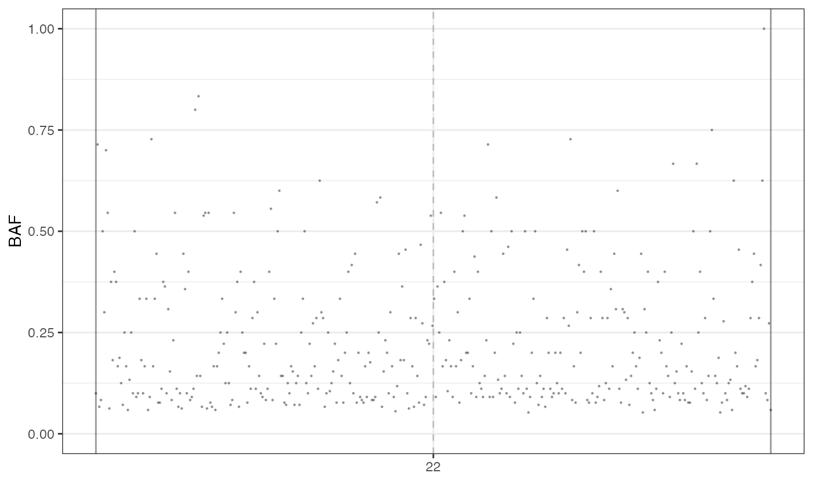

This function plots the genome-wide B-Allele Frequency (BAF) of a specific sample.
Usage
plot_BAF(seq_result, sample, chromosomes = NULL, cuts = c(0, 1), N = 5000)Arguments
- seq_result
A data frame containing sequencing results.
- sample
The name of the sample for which the plot will be generated.
- chromosomes
A character vector specifying the chromosomes to include in the plot (default: NULL, i.e., all the chromosomes).
- cuts
A numeric vector specifying the range of BAF values to include in the plot (default: c(0, 1)).
- N
The number of mutations to sample for plotting (default: 5000).
Examples
# set the seed of the random number generator
set.seed(0)
sim <- SpatialSimulation()
sim$add_mutant(name = "A",
growth_rates = 0.2,
death_rates = 0.0)
sim$place_cell("A", 500, 500)
sim$run_up_to_time(100)
#>
[████████████████████████████████████████] 100% [00m:00s] Saving snapshot
n_w <- n_h <- 10
ncells <- 0.8 * n_w * n_h
bbox <- sim$search_sample(c("A" = ncells), n_w, n_h)
sim$sample_cells("Sample", bbox$lower_corner, bbox$upper_corner)
forest <- sim$get_samples_forest()
m_engine <- MutationEngine(setup_code = "demo")
#>
[█---------------------------------------] 0% [00m:00s] Loading context index
[████████████████████████████████████████] 100% [00m:00s] Context index loaded
#>
[█---------------------------------------] 0% [00m:00s] Loading RS index
[███████████████-------------------------] 37% [00m:01s] Loading RS index
[██████████████████████████████----------] 74% [00m:02s] Loading RS index
[████████████████████████████████████████] 100% [00m:02s] RS index loaded
#>
[█---------------------------------------] 0% [00m:00s] Loading germline
[████████████████████████████████████████] 100% [00m:00s] Germline loaded
m_engine$add_mutant(mutant_name="A", passenger_rates=c(SNV=5e-8))
#>
[█---------------------------------------] 0% [00m:00s] Retrieving "A" SNVs
[████████████████████████████████████████] 100% [00m:00s] "A" SNVs retrieved
m_engine$add_exposure(c(SBS1 = 0.2, SBS5 = 0.8))
phylo_forest <- m_engine$place_mutations(forest, 10, 10)
#>
[█---------------------------------------] 0% [00m:00s] Placing mutations
[████████████████████████████████████████] 100% [00m:00s] Mutations placed
seq_results <- simulate_seq(
phylo_forest,
chromosomes = c('22'),
coverage = 10,
write_SAM = F
)
#>
[█---------------------------------------] 0% [00m:00s] Found 22
[█---------------------------------------] 0% [00m:00s] Reading 22
[█---------------------------------------] 0% [00m:01s] Reading 22
[█---------------------------------------] 0% [00m:01s] Processing chr. 22
[█---------------------------------------] 0% [00m:02s] Processing chr. 22
[██--------------------------------------] 3% [00m:03s] Processing chr. 22
[███-------------------------------------] 7% [00m:04s] Processing chr. 22
[█████-----------------------------------] 10% [00m:05s] Processing chr. 22
[██████----------------------------------] 14% [00m:06s] Processing chr. 22
[███████---------------------------------] 17% [00m:07s] Processing chr. 22
[█████████-------------------------------] 21% [00m:08s] Processing chr. 22
[██████████------------------------------] 24% [00m:09s] Processing chr. 22
[████████████----------------------------] 28% [00m:10s] Processing chr. 22
[█████████████---------------------------] 31% [00m:11s] Processing chr. 22
[███████████████-------------------------] 35% [00m:12s] Processing chr. 22
[████████████████------------------------] 38% [00m:13s] Processing chr. 22
[█████████████████-----------------------] 42% [00m:14s] Processing chr. 22
[███████████████████---------------------] 45% [00m:15s] Processing chr. 22
[████████████████████--------------------] 49% [00m:16s] Processing chr. 22
[█████████████████████-------------------] 52% [00m:17s] Processing chr. 22
[███████████████████████-----------------] 56% [00m:18s] Processing chr. 22
[████████████████████████----------------] 58% [00m:19s] Processing chr. 22
[██████████████████████████--------------] 63% [00m:20s] Processing chr. 22
[███████████████████████████-------------] 66% [00m:21s] Processing chr. 22
[█████████████████████████████-----------] 70% [00m:22s] Processing chr. 22
[██████████████████████████████----------] 73% [00m:23s] Processing chr. 22
[███████████████████████████████---------] 77% [00m:24s] Processing chr. 22
[█████████████████████████████████-------] 80% [00m:25s] Processing chr. 22
[██████████████████████████████████------] 84% [00m:26s] Processing chr. 22
[███████████████████████████████████-----] 87% [00m:27s] Processing chr. 22
[█████████████████████████████████████---] 91% [00m:28s] Processing chr. 22
[██████████████████████████████████████--] 94% [00m:29s] Processing chr. 22
[████████████████████████████████████████] 98% [00m:30s] Processing chr. 22
[████████████████████████████████████████] 98% [00m:31s] Processing chr. 22
[████████████████████████████████████████] 99% [00m:32s] Processing chr. 22
[████████████████████████████████████████] 99% [00m:33s] Processing chr. 22
[████████████████████████████████████████] 99% [00m:34s] Processing chr. 22
[████████████████████████████████████████] 99% [00m:35s] Processing chr. 22
[████████████████████████████████████████] 99% [00m:36s] Processing chr. 22
[████████████████████████████████████████] 99% [00m:37s] Processing chr. 22
[████████████████████████████████████████] 99% [00m:38s] Processing chr. 22
[████████████████████████████████████████] 99% [00m:39s] Processing chr. 22
[████████████████████████████████████████] 99% [00m:40s] Processing chr. 22
[████████████████████████████████████████] 99% [00m:41s] Processing chr. 22
[████████████████████████████████████████] 99% [00m:42s] Processing chr. 22
[████████████████████████████████████████] 99% [00m:43s] Processing chr. 22
[████████████████████████████████████████] 99% [00m:44s] Processing chr. 22
[████████████████████████████████████████] 99% [00m:45s] Processing chr. 22
[████████████████████████████████████████] 99% [00m:45s] Processing chr. 22
[████████████████████████████████████████] 99% [00m:46s] Processing chr. 22
[████████████████████████████████████████] 99% [00m:47s] Processing chr. 22
[████████████████████████████████████████] 99% [00m:48s] Processing chr. 22
[████████████████████████████████████████] 99% [00m:49s] Processing chr. 22
[████████████████████████████████████████] 99% [15m:49s] Processing chr. 22
[████████████████████████████████████████] 99% [15m:50s] Processing chr. 22
[████████████████████████████████████████] 99% [15m:51s] Processing chr. 22
[████████████████████████████████████████] 99% [15m:52s] Processing chr. 22
[████████████████████████████████████████] 99% [15m:53s] Processing chr. 22
[████████████████████████████████████████] 99% [15m:54s] Processing chr. 22
[████████████████████████████████████████] 99% [15m:55s] Processing chr. 22
[████████████████████████████████████████] 99% [15m:56s] Processing chr. 22
[████████████████████████████████████████] 99% [15m:57s] Processing chr. 22
[████████████████████████████████████████] 99% [15m:58s] Processing chr. 22
[████████████████████████████████████████] 100% [15m:59s] Reads simulated
library(dplyr)
# filter germinal mutations
f_seq <- seq_results$mutations %>% filter(classes!="germinal")
plot_BAF(f_seq, sample="Sample")

unlink('demo', recursive = T)